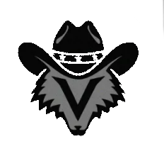
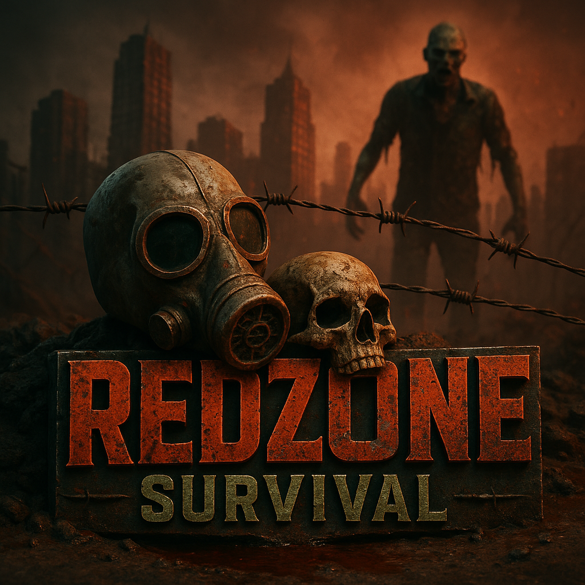

Welcome, !
Vous devez trouvez des matériaux de Recyclages ou de chasses. Apres avoir métrisé la fabrication de certains outils le feu deviendra votre meilleurs amis pour manger et fondre.
Les clans, sont les plus facile moyen d'avoir du matéreils et protections, faitez vos preuves pour etre bien vues et développé votre clan.
Le serveur est en mode SURVIE. Vous pouvez tomber malade et vous soigner avec des médicaments artisanaux. L'éconimie ce fait via des piéces d'or fabriqué par les joueurs eux meme, vous pouvez en trouver vous aussi
Les armes, de frabrication artisanals, vous trouverais toutes les piéces nécéssaires en fesant du troc et fouillant partout,
les poubelles et carcasses sont des idées a ne pas négligé, fouillez dans les place évidantes et vous deviendrez un Survivant au milieu de la RED Zones, toutefois attention aux radiations.
